利用多种功能安全方法学（Full Faults 与 SRF）提升汽车 IC 设计质量
论文针对汽车 IC 功能安全验证中全故障列表 fault simulation 计算量过大的问题，提出以 Statistical Random Faults (SRF) 统计抽样替代全故障仿真的流程。方法上基于 ISO 26262 与 IEC 62380 计算 Base Failure Rate/FIT，在 NPU 子系统的 TCM、Shared SRAM、LUTFIFO、DMA Memory 等存储块上部署 MECC、EECC、Parity、Cone Duplication、CRC 等安全机制，使用 Austemper SafetyScope 做安全分析与 FMEA/FMEDA 生成、KaleidoScope 执行 fault campaign，按 90% 置信区间生成 SRF 故障子集并计算 SPFM/DC。结果显示 TCM 全故障列表达 593532 个而 SRF 仅 4800 个，Shared SRAM 全故障仿真在约 10% 覆盖后崩溃，SRF 大幅缩短仿真时间且覆盖率预测误差很小，可支撑 ASIL B/C/D（DC ≥90%/>97%/>99%）达标论证。
功能验证只确认设计符合规格，不检查设计对随机硬件故障的自检测与自纠正能力；而面向 ISO 26262 的功能安全分析需对安全机制做 fault simulation 以获得 Diagnostic Coverage (DC)/SPFM，随着汽车芯片门数增长，全故障列表 fault campaign 的计算时间成倍增加（甚至仿真崩溃），如何在最短时间内获得最大 DC 并满足 ASIL 指标、避免 DC 不达标后从设计到验证到安全分析的全流程返工，是论文要解决的问题。
在架构阶段（RTL 之前）即开展 safety mechanism 探索：用 IEC 62380 模型计算 Base Failure Rate（λ = λdie + λpackage）预测 FIT 与 DC，据此选择合适安全机制；对 NPU 子系统各子块部署 Endpoint ECC (ATD-EECC)、Memory ECC (ATD-MECC)、Endpoint Parity (ATD-EPAR)、Endpoint Cone Duplication (ATD-ECDUP)、CRC 等安全机制；在 gate-level netlist 上注入 SA0/SA1 永久故障（transient 故障需考虑 Architecture Vulnerability Factor），用 Austemper SafetyScope 做安全分析并生成 FMEA/FMEDA、KaleidoScope 执行 fault campaign；核心是 SRF 统计随机抽样：按置信区间（90/95/99/99.9%，本文采用 90%）与有限总体修正 FPC = (1 - n) / N 求解所需随机故障子集规模 n，用子集仿真结果在小误差范围内估计全故障列表的 fault coverage，并与全故障列表仿真结果对比验证。
TCM block：SRF 故障列表仅 4800 个（2400 SA0 + 2400 SA1），而全故障列表达 593532 个（296766 SA0 + 296766 SA1）
SHARED SRAM 全故障列表仿真在覆盖约 10% 故障后发生崩溃，说明超大故障列表无法直接跑完，需依赖带置信区间的 SRF 随机故障列表保证故障空间覆盖
SRF 故障仿真计算时间相比全故障列表大幅降低（论文以 Table V 与 Fig. 10 给出对比），且 fault coverage 预测误差很小；具体数值未在论文正文给出
DC 达标门槛：ASIL B 需至少 90%，ASIL C > 97%，ASIL D > 99%；本文 SRF 生成采用 90% 置信区间
相对传统全故障列表 fault campaign，论文将 SRF 统计随机抽样（含置信区间与有限总体修正 FPC）引入 ISO 26262 安全分析流程，用小规模故障子集估计整体 DC/SPFM，从而绕开超大故障列表导致的仿真时间爆炸与崩溃问题；同时给出全故障列表与 SRF 的 alarm detected 数量与计算时间对比以证明方法有效性，并强调在 RTL 创建之前做架构级安全机制规划与 DC 预估，以减少后期昂贵迭代。
相关度级别：high
命中能力域：2.5 功能安全与安全机制 | 2.6 Fault simulation/Z01X/TFMEA
理由：论文直接命中团队 2.5（ISO 26262 安全分析、FMEDA、安全机制设计与验证、DC）与 2.6（基于功能 stimulus 的 fault injection、fault grading、DC 与 FMEDA/TFMEA 论证关联）两个能力域的核心技术：其 SafetyScope + KaleidoScope 的 fault campaign 流程、MECC/Parity/ECC 等安全机制的 DC/SPFM 评估、以及 SRF 统计抽样加速方法，与团队为 LPDDR/HBM4/UCie 等 IP 做功能安全 fault injection、fault grading 和 FMEDA/TFMEA 论证的工作高度同构，SRF 方法可直接借鉴用于缩短大规模 IP 的 DC 评估周期。
建议动作：深入精读并做内部分享
Gulshan Kumar Sharma，三星半导体印度研究院（SSIR），印度，gks.92@samsung.com
Sougata Bhattacharjee，三星半导体印度研究院（SSIR），印度，sougata.b@samsung.com
Wonil Cho，三星电子，韩国，wonil.cho@samsung.com
Akshaya Kumar Jain，三星半导体印度研究院（SSIR），印度，akshaya.jain@samsung.com
James Kim，西门子，韩国，james.kim@siemens.com
Sangkyu Park，三星电子，韩国，sangq.park@samsung.com
Hyeonuk Noh，三星电子，韩国，hyeonuk.noh@samsung.com
Andrey Likhopoy，三星电子，韩国，a.likhopoy@samsung.com
Ann Keffer，西门子，美国，ann.keffer@siemens.com
Arun Gogineni，西门子，美国，arun.gogineni@siemens.com
摘要 - 功能验证工作主要集中于确保设计符合规范所预期的要求，并且所有功能均已得到验证。它从不考察设计自身对随机硬件失效进行检测或自我纠正的能力。从危险失效和随机失效中恢复的能力对功能安全而言非常重要。本文的动机在于介绍与功能安全相关的流程，并观察其对设计正确性的影响。我们还给出了若干对比，这些对比源自在进行故障仿真时采用不同优化技术所得到的结果，其中故障仿真既可以基于全故障列表生成，也可以基于SRF。本文还指出了多种不同的技术，以便能够在最短时间内实现最大的诊断覆盖率（DC）。
当今车辆中的安全特性比以往任何时候都更加重要。自动驾驶汽车的新趋势要求汽车电子设备极其安全且更加可靠。功能安全已成为产品整体安全的一部分，用于确保设计行为。为确保汽车市场所用芯片的质量，业界提出了工业标准（IEC 62380）和汽车标准（ISO 26262）。所有汽车芯片制造商/供应商必须符合 ISO 26262，其产品才能被用于汽车之中。在 SOC 或 IP 层级结合仿真或硬件仿真开展功能安全（FuSa）的目的，在于向安全逻辑注入故障，以观察和分析这些故障的影响。
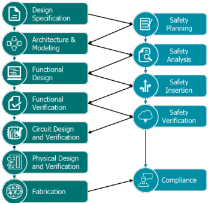
传统的 FuSa 流程从门级网表可用之时开始。对带有安全机制的设计进行分析并生成 FMEDA 报告 [1] 是安全工程师的职责。如果诊断覆盖率（DC）低于所要求的指标，那么从设计到验证再到安全分析重新启动整个生命周期将非常耗时，并会显著增加项目成本。为了减少这些耗时且代价高昂的迭代，安全工程师应当从架构层面着手工作。在创建寄存器传输级（RTL）之前，就应当在架构层面考虑安全规划以及对设计中所用安全机制的评估。这一安全分析将有助于预测接近准确的 DC [1][2] 值，从而有助于集成芯片达到期望的汽车安全完整性等级（ASIL）。
失效率或基本失效率（BFR）是指元件或器件发生失效并出现故障的频率或速率。失效率用 λ 表示，用于度量失效率的单位是 FIT（Failure in-time）。FIT 是器件/元件每十亿小时的失效率。1 FIT = 10^-9 每小时。
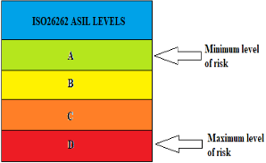
ASIL A 对应最低的风险水平，造成的损害最小；而 ASIL D 对应最高的风险水平，会对人的生命造成更大的损害。
| Safety Integrity Level | Failure per billion hour (FIT Rate) |
|---|---|
| A | 100,000 to 10,000 |
| B | 10,000 to 1,000 |
| C | 1,000 to 100 |
| D | 100 to 10 |
| Safety Integrity Level | Failure per billion hour (FIT Rate) |
从 ASIL A 到 ASIL D，每小时发生失效的概率降低，风险降低因子也随之下降。要达到 ASIL D 等级，预期发生的故障在每十亿小时内最少，即在 10 到 100 个故障的范围内。
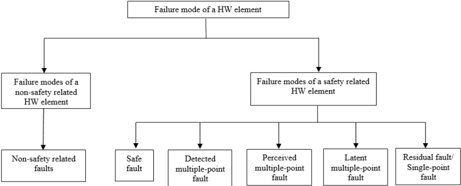
硬件元件的故障分类如下所述：
还有一种对故障进行分类的方法，即借助一种嵌入在安全范畴内、被称为影响锥（Cone of Influence，COI）的形式化引擎。COI 是一种在生成点被使用并在检查点处被观察的技术，在这两点之间存在若干 COI 相互重叠的区域，这些区域有助于故障分类。
在功能安全分析中估算器件或元件的基本失效率（Base Failure Rate，BFR）时，通常采用 IEC 62380 标准。IEC 62380 的 IC 失效率可以建模为裸片失效率与封装失效率之和。
λ = λdie + λpackage
[1]
其中 λdie = λthermal effects + λEOS effects，λpackage = λthermomechanical effects
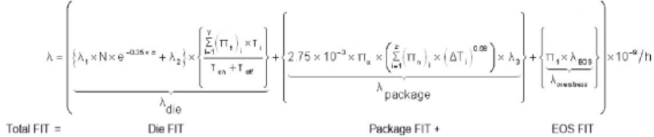
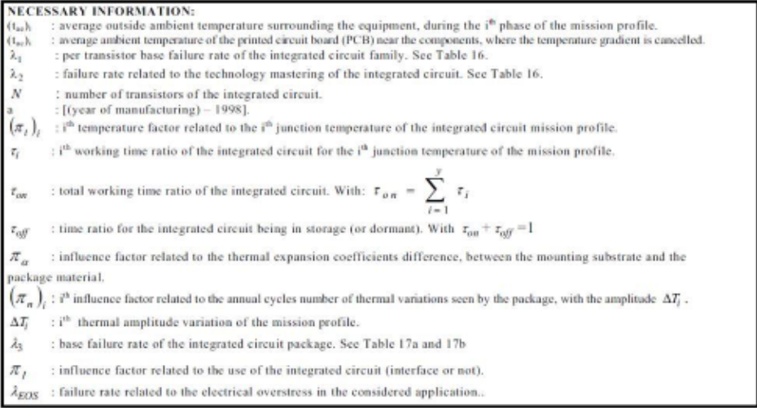
安全机制是指在车辆硬件中设计并实现安全措施，以保护乘员并防止事故发生。这可以包括用于检测潜在危害并对其做出响应的传感器和系统等措施，以及在任何故障或失效发生时能够接管控制的失效安全（fail-safe）系统。安全机制的目标是最大限度地降低由硬件失效引起的事故和伤害风险。安全机制实现的一个示例如图5所示。在设计中实现的安全机制示例包括奇偶校验器（Parity checker）、纠错码（ECC）、循环冗余校验（CRC）、存储器ECC（MECC）等。
NPU子系统中部署的安全机制的详细信息如下：
| EP | SP | Cone | Tolerance | |
|---|---|---|---|---|
| Perm DC | 99 | 0 | 0 | 1 |
| | EP | SP | Cone | Tolerance |
| EP | SP | Cone | Tolerance | |
|---|---|---|---|---|
| Perm DC | 99 | 99 | 99 | 1 |
| | EP | SP | Cone | Tolerance |
| EP | SP | Cone | Tolerance | |
|---|---|---|---|---|
| Perm DC | 99 | 0 | 0 | 0 |
| | EP | SP | Cone | Tolerance |
| EP | SP | Cone | Tolerance | |
|---|---|---|---|---|
| Perm DC | 99 | 0 | 99 | 0 |
| | EP | SP | Cone | Tolerance |
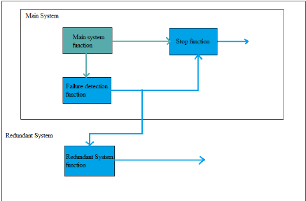
1
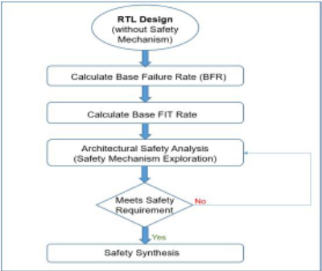
对设计进行安全分析的第一步是计算其基本失效率（BFR）。BFR 提供了设计中每十亿小时失效率的相关信息。BFR 将有助于预测 FIT 率以及设计的诊断覆盖率（DC）。基于 DC 值，进行安全机制（SM）探索，以找到有助于实现汽车标准 ASIL 目标的合适机制。如果满足安全要求，则最后一步是进行安全综合。
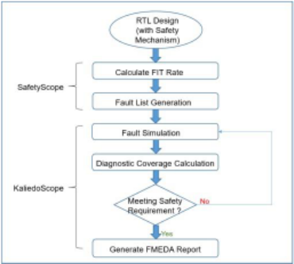
当设计中已经添加了安全机制时，安全流程将从计算 FIT 率开始。在计算出 DC 和 FIT（λ）的初始指标后，将为设计节点创建故障列表。注入的故障可以是永久性故障或瞬态故障。故障仿真完成后，将计算 DC 值，该值提供了故障检测覆盖率的相关信息。要达到 ASIL B，DC 值最低需达到 90%，ASIL C 要求更高（> 97%），ASIL D 要求更高（> 99%）。在满足 FIT 和 DC 的安全要求之前，需要通过分析场景并创建更多场景来提高 DC 值并降低 FIT 率。一旦满足安全要求，将生成最终的功能安全 FMEDA 报告，以符合 ISO26262。
近年来汽车半导体功能的增加导致逻辑电路中门数量的增加，其复杂度和故障数量在本质上呈指数级增长。由于故障数量庞大，全故障仿真活动的计算时间也成倍增加。为克服这一高昂的计算需求，提出了统计随机抽样方法。统计随机故障（SRF）[3] 包含设计中实际故障样本的一个子集，故障分析将在该子集上执行。由 SRF 仿真得到的故障覆盖率 [4] 将用于在较小的误差范围内估计完整故障列表的故障覆盖率。由于 SRF 故障列表与实际故障列表相比非常小，总体计算时间将大幅降低。
SRF 所采用的公式如下所示 [2]
此外，SRF 还取决于置信区间（Confidence Interval）的水平，即 90、95、99 和 99.9 等不同级别。
对于 99.9% 的置信区间，统计随机故障数量通过求解以下公式获得
c = 覆盖率目标，n = 随机化故障子集，FPC = 有限总体校正（Finite Population Correction）= (1 - n) / N
上述公式适用于永久性故障；而对于瞬态故障，则需要考虑“架构脆弱性因子”（Architecture Vulnerability Factor），为此需要采用以下选项
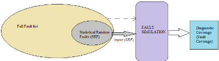
在安全分析过程中使用 Austemper SafetyScope，故障仿真则使用 KaleidoScope。故障仿真活动的实施步骤如下：
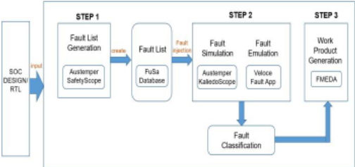
分析所获得的结果针对 NPU 子系统模块内部的不同存储器模块。所分析的存储器模块包括 TCM Memory、Shared SRAM、LUTFIFO 和 DMA Memory。所分析的故障为单点故障，并通过故障仿真活动为这些故障计算单点故障度量（SPFM）。TCM 模块与 CPU 交互，用于快速访问某些预先指定的功能。在该模块上实现的安全机制为 MECC（Memory Error Correcting Code，存储器纠错码）、EECC 和奇偶校验（Parity）。该安全机制在存储器模型上具有高可靠性并具备纠错能力。MECC 的诊断覆盖率（DC）值见表 II。
| Diagnostic Coverage Type | Diagnostic Coverage Type | Diagnostic Coverage Value |
|---|---|---|
| Permanent | Endpoint | 99 |
| Permanent | Startpoint | 99 |
| Permanent | Cone | 99 |
| Permanent | Tolerance | 1 |
| Diagnostic Coverage Type | Diagnostic Coverage Type | Diagnostic Coverage Value |
采用完整故障列表的故障仿真结果汇总于表 III 中。完整故障列表中的故障总数同时包括固定 0（Stuck-at-0，SA0）故障和固定 1（Stuck-at-1，SA1）故障。例如，为 TCM 模块生成的 SRF 故障为 4800 个（2400 个 SA0 故障 + 2400 个 SA1 故障），而 TCM 的完整故障列表包含 593532 个故障（296766 个 SA0 故障 + 296766 个 SA1 故障）。
| Block | Full Fault Space | Alarms Detected |
|---|---|---|
| TCM Core 0 | 593,532 | 99.58% |
| SHARED SRAM | 37,767,424 | Simulation crashed |
| TCM Core 1 | 593,532 | 99.59% |
| L0 BUF Mem | 66,496 | 99.98% |
| LUTFIFO | 296,104 | 99.96% |
| DMA MEM | 74,896 | 99.98% |
| Block | Full Fault Space | Alarms Detected |
表 II 和表 III 给出了通过故障仿真获得的不同存储器模块的报警检测结果。对于故障列表非常庞大的 SHARED SRAM 存储器模块，我们观察到在覆盖约 10% 的故障列表后仿真便发生崩溃。对于该存储器空间而言，这一覆盖数量明显偏少。带有置信区间的随机化 SRF 故障列表将确保我们覆盖故障空间及其中的故障。
用于生成 SRF 故障空间的置信区间（CI）为 90%。
| Block | SRF Fault Space | Alarms Detected |
|---|---|---|
| TCM Core 0 | 4800 | 99.92% |
| SHARED SRAM | 4714 | 100% |
| TCM Core 1 | 4804 | 99.96% |
| L0 BUF Mem | 4708 | 99.98% |
| LUTFIFO | 4510 | 99.97% |
| DMA MEM | 4438 | 99.95% |
| Block | SRF Fault Space | Alarms Detected |
表 V 证实，SRF 故障列表仿真所需的计算时间大幅缩短，且故障覆盖率预测准确，误差范围很小。
| Block | Full Fault Space | SRF Faults | Full Fault Computation time | SRF Computation time |
|---|---|---|---|---|
| TCM Core 0 | 593532 | 4800 | >48hrs | ~7hrs |
| SHARED SRAM | 1000000 | 4714 | >72hrs | ~6hrs |
| TCM Core 1 | 593532 | 4800 | >48hrs | ~7hrs |
| BUF Mem | 66496 | 4708 | >24hrs | ~5hrs |
| LUTFIFO | 296104 | 4510 | ~48hrs | ~6hrs |
| DMA MEM | 74896 | 4438 | >24hrs | ~5hrs |
| Block | Full Fault Space | SRF Faults | Full Fault Computation time | SRF Computation time |
图 10 给出了故障仿真中完整故障列表与 SRF 故障列表的计算时间对比。就数值和百分比而言，SRF 故障列表仿真的仿真时间缩减都十分显著。
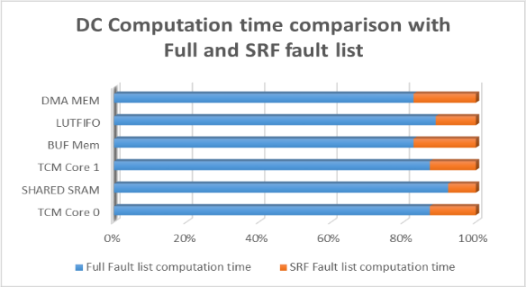
实施 SRF 故障注入活动的主要动机之一是每个模块所生成的庞大故障空间（故障列表）。当故障空间非常庞大时，故障仿真会出现局限，因为注入并覆盖故障（包括 SA0 和 SA1）所需的时间会成倍增加。完整故障列表检测到的告警数与 SRF 故障列表检测到的告警数之间的比较证明了该实现方法的有效性。与完整故障列表仿真相比，SRF 能显著缩短计算时间。